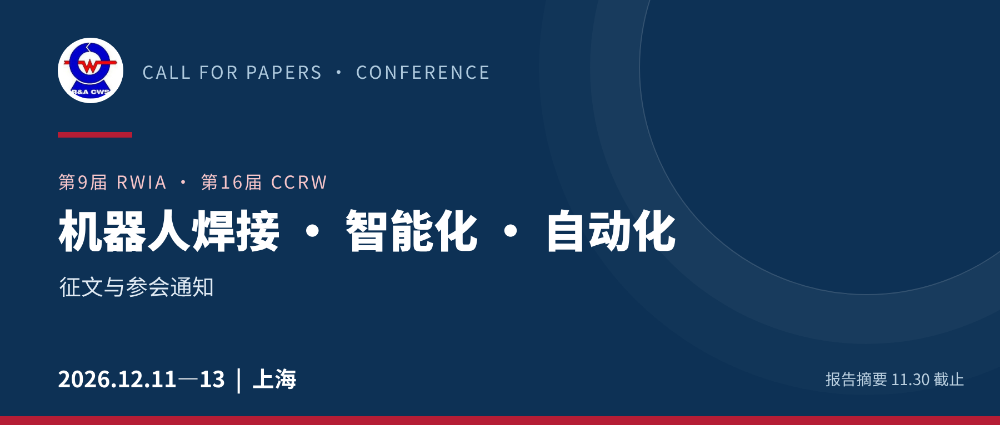
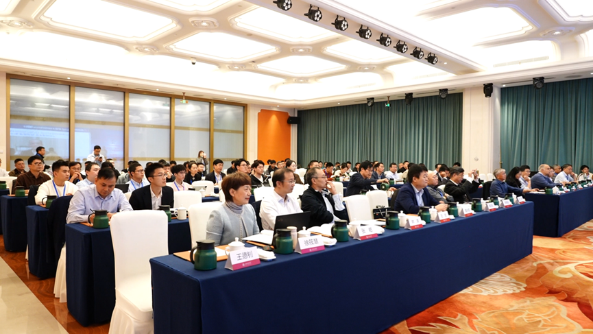
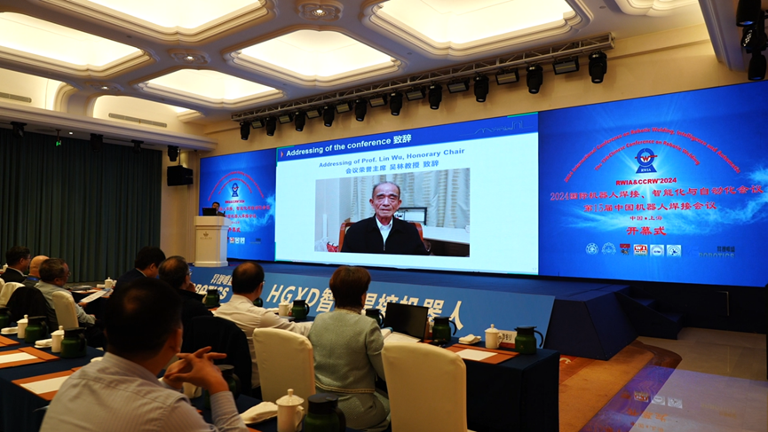
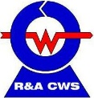

CALL FOR PAPERS · CONFERENCE NOTICE
第9届国际机器人焊接、智能化与自动化会议
暨第16届中国机器人焊接会议
2026年12月11—13日 · 中国上海
机器人焊接如何从示教再现走向自主感知、智能规划和质量闭环？2026年12月，机器人焊接、智能制造与相关应用领域的研究者和工程技术人员将在上海继续讨论这个问题。
RWIA系列会议于2002年12月首次在上海召开。本届会议以智能化焊接制造技术研究与应用为核心，关注焊接多模态感知、智能控制、具身智能与人工智能大模型等方向。会议由上海交通大学主办。
报告摘要截止：11月30日
会议地点：上海，具体会场待后续公布

01 / TOPICS
十大征文主题
从焊接机器人本体，到视觉感知、工艺决策、数字孪生与装备系统，欢迎基础研究和工程应用投稿。
| S01 机器人智能焊接与智能制造系统 | S02 新型特种焊接机器人与具身智能技术 |
| S03 机器人焊接自主规划与智能决策 | S04 焊接过程多模态感知与智能决策 |
| S05 焊接质量智能评价与闭环控制 | S06 焊接人工智能大模型与知识驱动技术 |
| S07 焊接过程数字孪生、建模仿真与智能优化 | S08 复杂环境下的机器人焊接与自主协同控制 |
| S09 智能化、数字化和柔性焊接设备 | S10 智能制造其他相关主题 |
02 / PROGRAM
相聚上海，共话研究与应用
正式邀请函公布的初步安排：
| 12月11日 | 报到注册；网上报名拟于11月15日起开放 |
| 12月12日 | 开幕式、主题演讲、特邀报告与论文报告 |
| 12月13日 | 技术参观 |
工作语言为中文和英文；报告使用英文PPT，现场口语交流可使用中文或英文。具体安排以会前正式日程为准。

03 / SUBMISSION
投稿要求与关键日期
英文论文按 Transactions on Intelligent Welding Manufacturing（TIWM）系列要求准备，采用Word模板SPLNPROC排版。CCRW中文论文须准备英文翻译稿；需秘书处协助翻译的作者应提前申请说明。
研究论文（Regular Papers）：一般不超过12页
技术和应用短文（Technical Notes）：一般不超过6页
请记住这四个时间点
| 2026.11.30 | 报告摘要提交截止 |
| 2026.12.11—13 | 会议举行 |
| 2027.01.30 | 第一批论文建议提交日期 |
| 2027.04.30 | 第二批论文提交截止日期 |
会议先于两批完整论文提交日期举行。摘要格式和提交方式请向秘书处确认；英文全文按通知要求通过TIWM在线系统提交，并同步发送至秘书处邮箱。
04 / PUBLICATION
关于论文出版
按征文通知，经同行评审录用的英文论文计划于2027年由Springer图书系列 Transactions on Intelligent Welding Manufacturing 分两册出版，每册计划收录约15篇。实际录用、编排和出版以评审结果及出版社安排为准。
会议报告、投稿、注册与论文录用属于不同环节；参会或缴费不代表论文自动录用。
05 / PARTICIPATION
参会与联系
正式邀请函列出的注册费标准如下。报名入口、付款方式与具体会址，请以会议秘书处后续发布的信息为准。
| 正式代表 | ¥1800 |
| 学生代表（有TIWM论文） | ¥1600 |
| 学生代表（无TIWM论文） | ¥1200 |
| 委员代表 | ¥1200 |
联系人：许燕玲
地址：上海交通大学
拟提交摘要或英文全文的作者，可通过秘书处邮箱确认摘要格式、最新在线投稿入口及注册事宜。

欢迎投稿 · 相约上海
本文依据2026年10月20日征文通知和正式邀请函整理。
日程、注册和出版安排以会议秘书处后续通知为准。